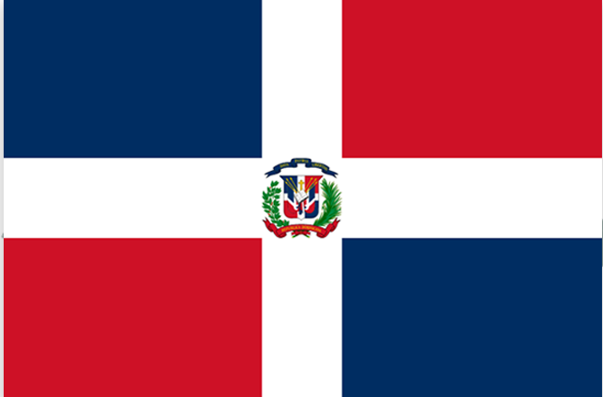
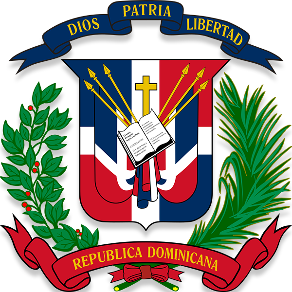

Republica Dominicana
La bandera de la Republica Dominicana

Caracteristicas de la Bandera Nacional de La Republica Dominicana
- Tiene un fortmato rectangular, predominan una cruz en el centro formando una cruz de lado a lado.
- El Escudo Nacional es posicionado en el centro de la bandera haciendon interseccion entre el punto centro.
- En los extremos se encuentran cuatro rectangulos con colores alternados rojo y azul.
Colores
- Rojo Bermellon.
- Azul Ultramar.
- Blanco.
Escudo Nacional de La Republica Dominicana

Caracteristicas de el Escudo Nacional de La Republica Dominicana
- Caracteristica 1.
- Caracteristica 2.
- Caracteristica 3.
Colores
- Informacion adicional 1.
- Informacion adicional 2.
- Informacion adicional 3.
Himno Nacional de La Republica Dominicana
"Presiona reproducir para escuchar el Himno Nacional de La Republica Dominicana"
Letra del Himno Nacional
Letra.